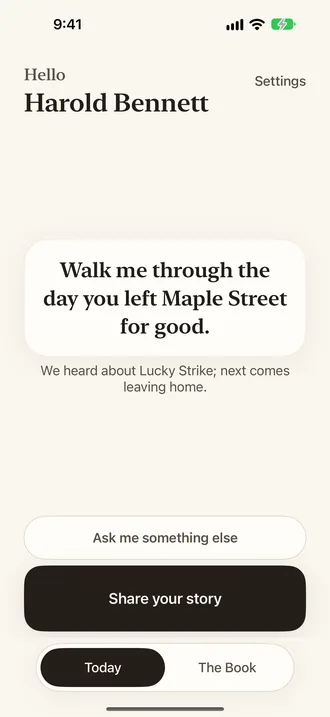
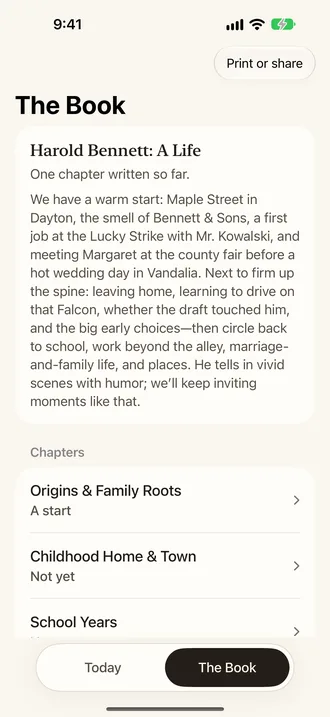
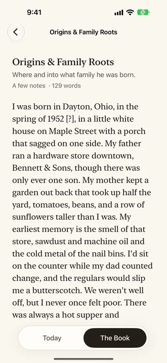
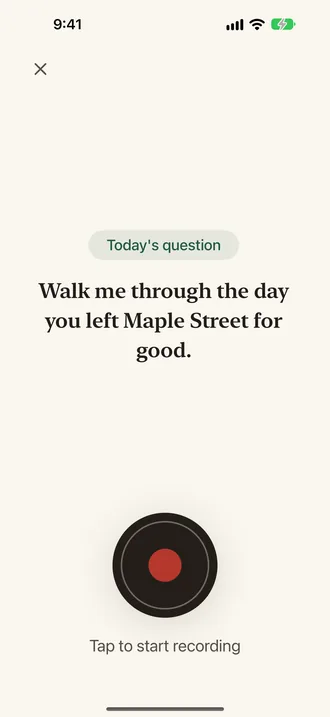

FOR IPHONE
One question a day. A book at the end.
Legacy asks you a single question each morning about your life. You answer out loud, in your own words, for as long as you like. It writes down what you said and keeps building a book, chapter by chapter, that your family can read.
Made for one family. Available on the App Store by invitation.

How it works
- One question is waiting.
Each morning the Today screen has a single question, chosen from everything you have told it so far: the house you grew up in, your first job, the people who mattered. If it does not suit you, ask for another.
- You talk.
Press Share your story and speak. There is nothing to type and no time limit. Press I'm done when you are done.
- It becomes a chapter.
A minute later the story is written down in your words, the people, places and dates are picked out, and the book grows. Your recording stays beside the text, so your family hears your voice too.



For the family
Invite family members from Settings and they can read along from their own phones and listen to the recordings. Print or share the book so far as a PDF whenever you like.
Yours to keep, or delete
Recordings and chapters are private to you and the people you invite. No ads, no tracking. Delete a story, or the whole account and everything in it, at any time. The privacy policy says exactly what is kept and where.